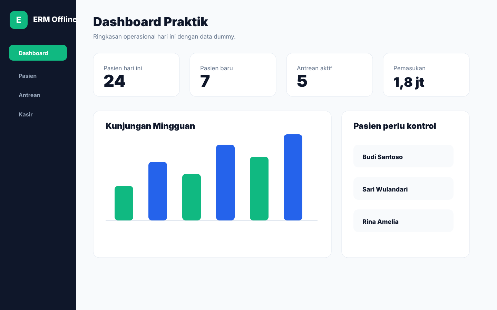

Catatan masih manual
Buku dan kertas cepat dipakai, tetapi riwayat pasien sulit dicari saat kunjungan berikutnya.
Aplikasi rekam medis offline untuk Windows
Rekam medis untuk praktik mandiri yang ingin mulai rapi tanpa sistem cloud yang rumit. Data tetap lokal, dokumen bisa dicetak, dan workflow harian dokter/admin dibuat ringan.

Masalah yang diselesaikan
Buku dan kertas cepat dipakai, tetapi riwayat pasien sulit dicari saat kunjungan berikutnya.
Dokter/admin sering mengetik ulang dokumen yang formatnya sebenarnya bisa dibuat lebih konsisten.
Pasien, kunjungan, diagnosis, obat, dan laporan harian perlu bisa dicari tanpa membuka banyak file.
Banyak praktik butuh sistem lokal yang tetap berjalan saat internet lambat atau tidak tersedia.
Workflow produk
Admin mencari pasien lama atau menambahkan pasien baru, lalu membuat kunjungan hari ini.
Paket Basic Plus menambahkan antrean sederhana dengan status menunggu, diperiksa, selesai, atau batal.
Dokter mencatat keluhan, pemeriksaan, assessment, plan, diagnosis, resep, dan dokumen klinis.
Resep dan surat tersedia di Basic. Invoice, kwitansi, dan laporan pemasukan tersedia di Basic Plus.
Owner dapat menjaga data lokal dengan backup/restore dan melihat aktivitas operasional penting.
Fitur utama
Identitas, kontak, alergi, catatan penting, dan riwayat kunjungan pasien.
Kunjungan harian, subjective, objective, assessment, plan, diagnosis, dan follow-up.
Template klinis membantu mempercepat input berulang tanpa menghilangkan catatan dokter.
Resep pasien dapat disimpan sebagai PDF dan dicetak melalui workflow Windows.
Surat sakit, sehat, rujukan, dan dokumen klinis lain dibuat lebih rapi.
Lihat kunjungan, pasien baru, pasien kontrol, diagnosis, obat, antrean, dan pemasukan sesuai paket.
Backup lokal terenkripsi dan restore tersedia untuk menjaga data praktik.
Aktivasi memakai license key dan device fingerprint, sesuai paket yang dibeli.
Settings klinik dapat mengatur folder penyimpanan PDF agar arsip lebih mudah ditemukan.
Paket produk
Basic
Untuk praktik mandiri yang butuh RME inti di laptop Windows.
Basic Plus
Untuk praktik yang mulai membutuhkan antrean dan kasir sederhana.
Advance Local Network
Untuk praktik dengan laptop server, admin, dan dokter di WiFi lokal.
Pro
Untuk fitur besar masa depan, belum diklaim siap pada versi offline saat ini.
ERM Offline bukan sistem rumah sakit besar. Fokusnya adalah praktik dokter, bidan, dokter gigi, dan klinik kecil yang ingin sistem lokal rapi tanpa cloud wajib.
Ekspektasi jelas
Screenshot aplikasi
Visual UI disiapkan dengan data dummy berdasarkan progress ERM Offline. Saat screenshot build terbaru sudah tersedia, file di folder screenshot bisa diganti tanpa mengubah struktur halaman.
Keamanan dan offline
ERM Offline dirancang untuk laptop/server praktik. Database terenkripsi, backup tersedia, export/cetak tercatat, dan lisensi dikunci ke perangkat sesuai paket.
FAQ
Tidak wajib untuk operasional harian. Produk diposisikan offline-first untuk Windows.
Data tersimpan lokal di laptop atau server praktik, sesuai paket dan setup yang digunakan.
Paket Advance Local Network direncanakan untuk server lokal dan client admin/dokter melalui WiFi lokal.
Basic fokus RME inti. Basic Plus menambahkan antrean, kasir, invoice, laporan pemasukan, dan audit viewer. Advance menambahkan skenario jaringan lokal.
Resep dan surat tersedia di Basic. Invoice dan kwitansi tersedia di Basic Plus.
Ya, backup/restore lokal tersedia sebagai bagian penting dari produk offline.
Belum diklaim siap. SATUSEHAT masuk roadmap Pro/lanjutan setelah produk offline stabil.
Data dapat dipulihkan dari backup yang valid. Praktik tetap perlu disiplin melakukan backup berkala.
Aplikasi diinstal di Windows, lalu license key dibuat berdasarkan device fingerprint perangkat pembeli.
Demo awal diarahkan 15 menit lewat WhatsApp atau remote singkat untuk melihat jenis praktik, jumlah perangkat, dan paket yang paling masuk akal.
Belum. Tahap awal memakai konsultasi/demo manual agar kebutuhan praktik dipahami sebelum instalasi dan aktivasi.
Alur sales sederhana
Gunakan pertanyaan berikut saat calon pembeli masuk dari website agar kebutuhan paketnya cepat terbaca.
Dokter umum, bidan, dokter gigi, atau klinik kecil?
Dipakai di satu laptop saja, atau butuh admin/dokter di jaringan lokal?
Cukup RME Basic, atau perlu antrean, kasir, invoice, dan laporan pemasukan?
Saat ini pakai buku, Excel, atau aplikasi lain? Perlu bantuan migrasi awal?
Konsultasi / Minta Demo
Demo awal 15 menit via WhatsApp/remote. Nomor WhatsApp final bisa dipasang di `script.js` pada konstanta `WHATSAPP_NUMBER`.